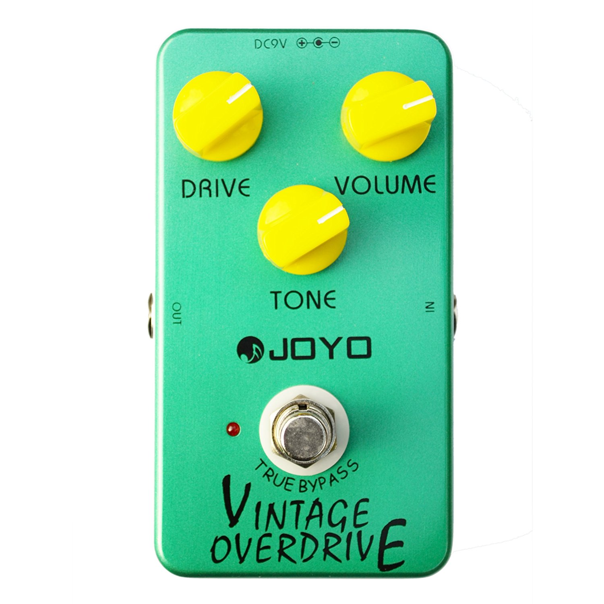
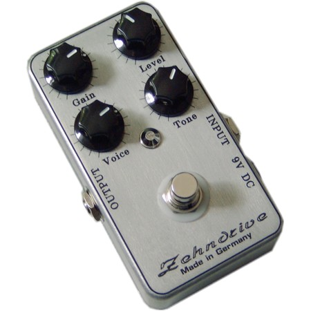
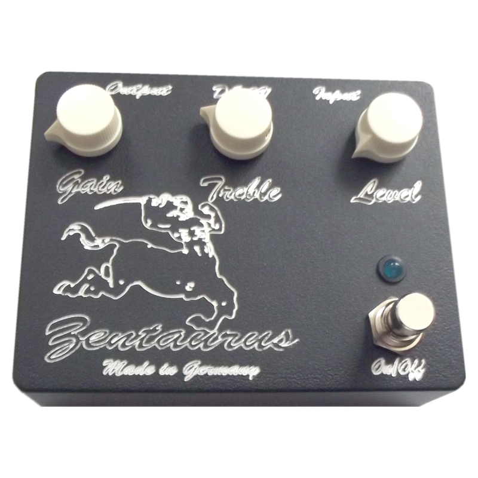
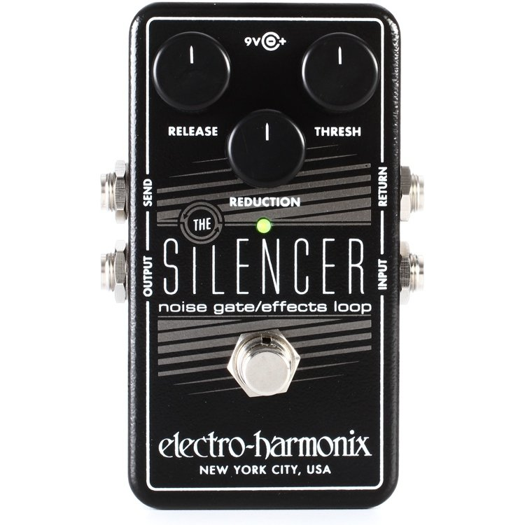

Pedals
|  |
Joyo Vintage Overdrive |
| Type |
Overdrive Pedal |
| Cost |
$40 (+ ~$10 for diode mods) |
| This is a cheap Tubescreamer clone I boguht off Amazon.
I was looking for a new pedal to act as a front boost to my amp instead of
relying on my DIY Zendrive. Having a Tubescreamer in a guitarist's arsenal seems
to be almost universal, so I set out to pick one up. It's definately a Mid focused
overdrive, and does a decent job boosting a high gain channel, or adding a little dirt.
However, I was curious on how swapping the clipping diodes would affect it's playability.
After playing with various silicon, Germanium, and LED Diodes, I ended up using
a Red LED in one direction, and two 1n4001 diodes the other |
|  |
Ze(h)ndrive |
| Type |
Overdrive Pedal |
| Cost |
$50 |
| This overdrive pedal was assembled from a kit from MEK-UK,
a German based shop for DIY projects. The pedal is a clone of a Zendrive, which in itself is supposed to emulate a Dumble amp (which was based off a Fender amp...). I actually prefer
this pedal as a dedicated overdrive over the Joyo and Klon clone, since it has a good range of gain and sensitivity to attack. I occasionally like to run it before the Joyo
to help shape the guitar tone for boosted High gain. The only downside to this pedal is my poor soldering and assembly skills has caused it to bug out occasionally. Other than that
it's a great pedal! |
|  |
Klon clone |
| Type |
Overdrive/Buffer/Boost Pedal |
| Cost |
$60 |
| Another pedal assembled from a MEK-UK kit.
This one is obviously based off the infamous Klon pedal. The pedal does well as a low gain or dedicated boost pedal. It uses an interesting circuit to blend a buffered clean signal
with a boosted/overdriven signal. It sports only three controls (Volume, Treble, Gain), but it definately gets the job done. I also included a mod that switches between buffered and true bypass when
the pedal is off. Overall, its a really good pedal, and definately beats the hefty price the real deal is calling for these days! |
|  |
EHX Silencer |
| Type |
Noise Gate Pedal |
| Cost |
$40 |
| This is a noise gate pedal used to tame some noise/hum generated from my guitars, especially at high gain. It does a good job at attenuating noise, at the
price I purchased it, I cannot argue. I only wished the attack was a little faster. |